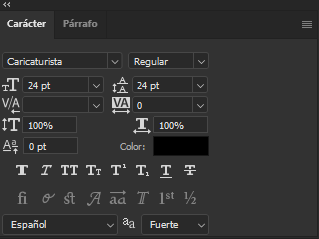
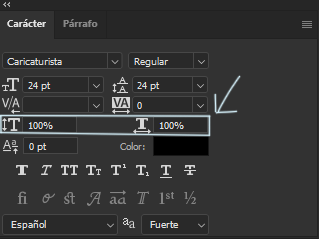
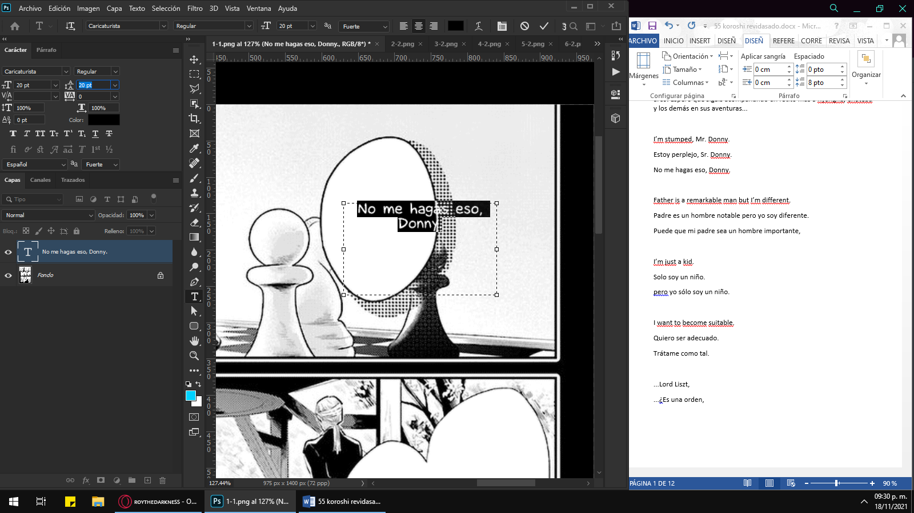

Tutorial Type con Photoshop
Modificación del espacio de trabajo
Bien primero activaremos los caracteres y las capas: te vas a ventana y activas los caracteres y capas
yo acomode así mi área de trabajo cerrando todo y solo activando capas y caracteres, también arrastre todo a la izquierda para más comodidad eso ya depende te tus gustos
Usar la herramienta de texto:
Para agregar texto simplemente presionamos la letra T del teclado o de la barra de herramientas:
luego solo arrastramos para hacer un recuadro de texto copiamos el texto y lo pegamos en el recuadro de texto
Uso de la ventana de caracteres:
la ventana de caracteres se utiliza para cambiar aspectos del texto que te enseñaré a continuación

La primera nos sirve para cambiar de fuente
Las fuentes son los tipos de letras Estas se consiguen en páginas como dafont.com y googleando Para instalar una fuente solo se debe descargar, descomprimir y darle en instalar fuente En los mangas se usan muchas fuentes
te enseñaré más adelante como saber que fuente debes usar
Esta nos sirve para cambiar el tamaño
Este nos sirve para cambiar el interlineado.
por lo general tiene que tener el mismo número que el tamaño, PERO en algunas ocasiones se debe reducir o aumentar para que se mire bien
¿Qué es el interlineado?
Es la distancia entre cada línea del párrafo, Debes tratar de que no quede muy separado ni muy junto debe de ser lo más junto posible sin que choquen entre si
A continuación te mostraré como NO debe quedar y como debe quedar:
Este es para el alto y ancho del texto casi no se toca
aunque muchos dejan en 90% el ancho en los mangas pero es cuestión de gusto

Estos son negritas cursivas y demás se usan debes en cuando y son iguales a word
Si tienes duda sobre esto pregunta en el discord
Este es el método de suavizado
Es muy importante, Se utiliza el nitido o el fuerte ya que los demás no se miran tan bien
personalmente me encanta usar el fuerte ya que se lee mejor
Aumentar el tamaño y mover el texto facilmente
Presionamos la capa donde está el texto que queremos cambiar el tamaño y para esto utilizaremos el siguiente comando CONTROL T nos saldrá unos bordes azules que podemos extender y contraer para aumentar o disminuir el tamaño también podemos mover el texto Luego presiona la capa de nuevo para deseleccionar o Enter
Acomodo de texto:
El acomodo de texto es lo que diferencia a un buen typper de uno malo tienes que tratar que se mire el texto lo mejor posible
Lo que hago mucho es luego de pegar el texto le intento dar una forma al texto donde debes cuidar los siguientes aspectos:
Esta es la forma correcta de acomodar el texto:
y esta la incorrecta:
para lograr una forma así no dudes en separar por si-la-bas, también lo que hago mucho es contraer o extender la maya del texto para que se vaya acomodando casi automáticamente
Me refiero a las líneas negras No a la azul
Ventana de párrafo:
Esta ventana nos sirve para alinear, centrar etc el párrafo aquí por lo general se deja en la segunda opción y con el chekesito en separar:
Bordes
los bordes se usan siempre que un texto este delante de un fondo ya sea un fondo de color, de objeto o líneas
Para agregar borde a un texto se hace lo siguiente:
1- Click derecho en la capa del texto, luego opciones de fusión
2- Nos vamos a trazo y ahí elegimos el tamaño del trazo (Borde) por lo general son números pequeños también el color y se deja la posición en exterior
Como trabajo yo:
1- Copio y pego el texto
CTRL + C para copiar y CTRL + V para pegar
2- Selecciono y trato que quede del mejor tamaño interlineado etc, que lleve la fuente que corresponde al globo
más adelante te enseño como seleccionar la fuente

3- Luego acomodo el texto contrayendo o extendiendo la línea negra
aquí solo tuve que mover la línea a la izquierda y quedo muy bien
4- click en la capa donde está el texto y luego CONTROL T, Aumentamos o disminuimos el tamaño y lo dejamos justo en el centro

y listo, ya estaría el typpe a seguir con los demás globos
Fuentes que debes usar:
Estas son las fuentes que se usan en unknown son muchas fuentes que te pueden servir, siempre entre manga y manga varia un poco las fuentes ahí están todas las que se usan solo se da doble click y se instala, puedes buscar más en dafont.com google o otros sitios
Dependiendo del globo o el lugar situado que este el texto, cambia el estilo de fuente, ya sea globo de gritos (suelen ser globos en forma puntiagudas) , pensamientos (globos en forma de nube) acá un ejemplo
En donde se usa cada fuente:
Bocadillos son los globos:
Los normales son los redonditos como estos:

Gritos los que tienen picos:
Los pensamientos son nubes:
también estos usan la misma fuente:
nota: que mal typpe de este globo
Este es un dialogo de fondo o secundario
Tiene otros nombres pero así le llamo yo XDDD
Las onomatopeyas o SFX son los efectos de sonidos escritos, Se usan muchas fuentes para que quede bonito también uso filtros y efectos de photoshop
Con los filtros y efectos investigalos tu en yt son muchos
Estos son los bocadillos cuadrados:
Para guardar los archivos anda a Archivo/exportar/Exportar como, exportar en jpg y calidad maxima:
Lo guardas donde quieras y lo subes a drive
También debes guardarlo en PSD
El PSD significa: PhotoShop Document, Nos sirve para guardar y poder editar lo hecho luego. Siempre se harán una o otra corrección de tildes o uno que otro error, Archivo/guardar,
Y eso es todo. Te dejo una prueba para que practiques Descarga de prueba una vez terminado, lo guardas en la carpeta de “entrega de prueba” pones tu nombre y vas al canal #general-typpe haces ping a la persona que te supervisa para calificar tu prueba.
Cualquier duda o consulta puedes escribirla en el server Staff de Discord #general-typpe